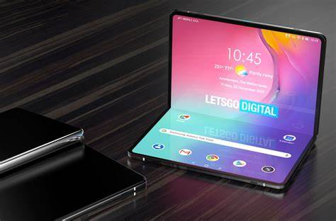

Advancements in Electronic Devices
1. Introduction
Electronic devices have become an integral part of our daily lives, revolutionizing the way we work, communicate, and entertain ourselves. Over the years, these devices have seen significant advancements, bringing us closer to a future where technology seamlessly integrates with every aspect of our lives.
2. Internet of Things (IoT)
The Internet of Things (IoT) has paved the way for smart homes and connected devices. IoT enables electronic devices to communicate with one another, sharing data and automating tasks. For example, smart thermostats can adjust the temperature based on your preferences, and smart lights can be controlled remotely from your phone.
3. Flexible and Foldable Displays
Flexible and foldable displays have made their debut in smartphones and other electronic devices. These innovative screens allow for unique form factors, such as foldable smartphones and rollable TVs. This technology offers new possibilities for device design and user experience.
4. Advancements in Semiconductors
Advancements in semiconductor technology have led to smaller, faster, and more efficient chips. These developments are driving the performance of devices such as smartphones, laptops, and gaming consoles. As semiconductors continue to improve, we can expect even more powerful and energy-efficient devices in the future.
5. Augmented and Virtual Reality
Augmented reality (AR) and virtual reality (VR) have gained traction in recent years, with applications in gaming, education, and training. These technologies create immersive experiences that blend the digital and physical worlds, offering users a new way to interact with content.
6. Conclusion
The advancements in electronic devices are shaping our future in exciting ways. From the Internet of Things to augmented and virtual reality, technology is continuously evolving to enhance our lives. It's an exciting time to be a part of the ever-changing world of electronics!